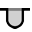
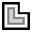

Memodifikasi Geometri
Dalam Penekukan TecZone, Anda memiliki editor sketsa 2D yang canggih untuk memodifikasi, membersihkan, atau menambahkan geometri Anda. Gunakan tombol Pintasan S untuk masuk ke mode sketsa. Editor menampilkan komponen dalam tampilan bentangan.

Dalam tampilan bentangan, klik ikon Bersihkan  atau tekan tombol Pintasan S.
atau tekan tombol Pintasan S.
Sebuah menu terbuka dengan berbagai ikon untuk pemrosesan bentangan:

Panel Sketsa
| Ikon | Simbol | Arti |
|---|---|---|
|
Pilih |
Pilih objek, garis, entri, dll. |
|
Garis |
Buat sketsa garis |
|
Garis tersambung |
Membuat sketsa sejumlah garis |
|
Paralel |
Membuat sketsa sejajar dengan garis |
|
Normal |
Membuat sketsa garis singgung pada kurva |
|
Garis tekuk |
Membuat sketsa garis normal ke garis |
|
Busur titik tengah |
Buat sketsa garis tekuk |
|
Busur melingkar 2 titik |
Membuat sketsa busur dari titik pusat, titik awal, dan titik akhir |
|
Busur melingkar 3 titik |
Membuat sketsa busur melingkar melalui dua titik yang ditentukan (titik awal dan akhir) |
|
Garis singgung busur melingkar |
Membuat sketsa busur yang bersinggungan dengan elemen sketsa |
Persegi panjang |
Membuat sketsa persegi panjang |
|
|
Persegi panjang titik tengah |
Membuat sketsa persegi panjang dari tengah |
|
Lingkaran |
Membuat sketsa lingkaran. Pilih titik tengah lingkaran dan seret kursor untuk menentukan radius atau masukkan nilai untuk radius |
|
Radius dengan 2 titik |
Membuat sketsa lingkaran sesuai dengan keliling. Pilih satu titik pada lingkaran, kemudian pilih titik kedua dan titik ketiga. |
|
Radius dengan 3 titik |
Membuat sketsa lingkaran sesuai dengan keliling. Pilih satu titik pada lingkaran, kemudian pilih titik kedua dan titik ketiga. |
|
Lingkaran dengan 2 garis singgung |
Membuat sketsa lingkaran dengan dua garis singgung. Masukkan diameter lingkaran, lalu pilih titik singgung pertama, kemudian pilih titik singgung kedua. |
|
Lingkaran dengan 3 garis singgung |
Membuat sketsa lingkaran dengan tiga garis singgung. Masukkan diameter lingkaran, lalu pilih titik singgung pertama, kemudian titik singgung kedua, dan terakhir titik singgung ketiga. |
|
Titik tengah poligon - titik sudut |
Membuat sketsa lingkaran dengan tiga garis singgung. Masukkan diameter lingkaran, lalu pilih titik singgung pertama, kemudian titik singgung kedua, dan terakhir titik singgung ketiga. |
|
Titik tengah poligon - tepi sisi tengah |
Membuat sketsa poligon. Tentukan jumlah sisi dan pilih titik tengah serta tengah tepi sisi |
|
Poligon dengan tepi sisi |
Membuat sketsa poligon. Tentukan jumlah sisi dan tentukan titik awal dan titik akhir dari sebuah sisi. |
|
Pembulatan |
Membuat lengkungan di sudut pertemuan dua elemen sketsa dengan radius yang telah dimasukkan, sehingga terbentuk busur tangensial/bersinggungan |
|
Miring |
Membuat bevel di sudut persimpangan dua elemen sketsa |
|
Lingkaran trim sudut |
Memangkas sudut di persimpangan dua elemen sketsa dengan radius yang dimasukkan |
|
Tepi trim sudut |
Memangkas sudut di persimpangan dua elemen sketsa dengan persegi panjang. Ukuran persegi panjang dapat dimasukkan terlebih dahulu. |
|
Dipotong bebas berbentuk persegi |
Membuat pemotongan bebas berbentuk persegi panjang. Anda harus memasukkan jarak sudut, kedalaman pemotongan bebas, dan kemudian memilih sudut. |
 |
Slot melengkung dipotong bebas |
Membuat pemotongan bebas berbentuk lubang oval. Anda harus memasukkan jarak sudut, lebar pemotongan bebas, kedalaman pemotongan bebas, dan kemudian memilih sudut. |
|
Dipotong bebas bentuk segitiga |
Membuat pemotongan bebas segitiga. Anda harus memasukkan jarak sudut, lebar pemotongan bebas, kedalaman pemotongan bebas, dan kemudian memilih sudut. |
|
Lubang kunci |
Membuat lubang kunci dalam lingkaran dengan nilai yang dimasukkan. |
|
3 segmen pembulatan penuh |
Membuat lengkungan tiga elemen sketsa yang terhubung |
|
Perpanjang elemen |
Pilih elemen sketsa yang akan diperpanjang |
|
Potong elemen |
Pilih elemen sketsa yang akan dipangkas |
|
Gabung |
Digunakan untuk memangkas dan menggabungkan beberapa polyline terpisah menjadi satu |
 |
Elemen offset |
Geser satu atau lebih elemen sketsa, tepi model sketsa, atau wajah model dengan jarak yang ditentukan |
|
Geser |
Pilih elemen sketsa dengan ctrl, pilih titik referensi, dan pindahkan elemen sketsa |
|
Putar |
Pilih elemen sketsa dengan ctrl, pilih titik pusat putaran, lalu pilih titik awal dan titik akhir untuk memutar elemen sketsa |
|
Skalakan |
Pilih elemen sketsa dengan ctrl, pilih titik dasar, kemudian titik referensi awal dan titik referensi akhir untuk menskalakan elemen sketsa |
|
Cerminkan |
Pilih elemen sketsa dengan ctrl, lalu awal garis cermin, dan kemudian akhir garis cermin untuk mencerminkan elemen sketsa |
|
Pola linear |
Gunakan pola linier untuk membuat salinan yang saling merujuk dari satu atau lebih elemen sketsa yang dapat Anda atur pada jarak yang sama sepanjang satu atau dua jalur linier. Klik pada pola linier dan masukkan nilai yang diinginkan |
|
Pola lingkaran |
Gunakan pola lingkaran untuk membuat salinan yang saling merujuk dari satu atau lebih elemen sketsa yang dapat Anda atur pada jarak yang sama di sekitar sumbu. Klik pada pola lingkaran dan masukkan nilai yang diinginkan |
|
Kombinasikan permukaan |
Pilih dua atau lebih elemen sketsa yang tertutup untuk menggabungkan permukaan satu sama lain |
|
Permukaan potongan |
Pilih dua atau lebih elemen sketsa yang tertutup untuk menghasilkan area pemotongan dari elemen yang dipilih |
|
Potong permukaan |
Pilih dua atau lebih elemen sketsa tertutup untuk memangkas permukaan |
|
Salin potongan bebas |
Anda dapat membuat beberapa salinan notch di sepanjang tepi menggunakan alat ini. Pertama, masukkan jarak bebas antarsalinan, dan jumlah salinan notch yang ingin Anda buat. Kemudian, pilih notch dengan mengklik pada dua segmen garis yang berdekatan dengan notch |
|
Hapus potongan bebas |
Anda dapat menghapus notch di sudut, atau sepanjang segmen garis, menggunakan alat ini. Klik pada dua segmen garis yang berdekatan dengan notch, dan notch akan dihapus |
|
Cerminkan potongan bebas |
Anda dapat mencerminkan notch di sudut, atau sepanjang segmen garis, menggunakan alat ini. Klik pada dua segmen garis yang berdekatan dengan notch, dan notch akan dicerminkan |
|
Garis melengkung |
Untuk memulai spline baru, klik pada titik awal, dan saat Anda mengklik titik-titik berikutnya, spline akan dibuat. Jika Anda ingin menutup spline, tekan tombol ALT dan kemudian klik |
|
Profil |
Ketik panjang dasar, tinggi sisi tekukan, ketebalan, sudut sisi tekukan, radius dalam, dan tekan enter untuk membuat profil |
|
Teks |
Digunakan untuk menggambar teks yang akan ditandai pada komponen oleh mesin Laser. Saat Anda mengklik tombol alat ini, baris masukan akan menampilkan kotak masukan untuk teks, ukuran, dan sudut putaran |
|
Teks |
Digunakan untuk mengambil bentuk karakter dari font TrueType apa pun dan mengubahnya menjadi polyline. Pengaturan alat laser kemudian dapat diterapkan pada polyline ini, dan polyline tersebut dapat dipotong. Saat tombol ini diklik untuk pertama kalinya, kotak dialog Font akan muncul, memungkinkan Anda memilih font yang akan digunakan untuk teks |
|
Bentuk standar |
Digunakan untuk membuat beberapa bentuk umum dan menyisipkannya ke dalam diagram. Ketika Anda mengklik tombol ini, kotak dialog "Buat Bentuk" akan muncul, memungkinkan Anda memilih dari palet bentuk umum yang terdaftar |
|
Dimensi sederhana |
Pilih titik dimensi pertama, kemudian titik dimensi kedua, dan posisikan garis dimensi |
|
Dimensi referensi |
Pilih titik dimensi pertama, kemudian titik dimensi kedua, dan posisikan garis dimensi |
|
Rangkaian dimensi |
Pilih titik dimensi pertama, lalu titik dimensi kedua, posisikan garis dimensi, dan pilih titik dimensi berikutnya |
|
Dimensi ordinat horizontal |
Dimensi ordinat adalah sekumpulan dimensi yang diukur dari titik nol ordinat pada diagram. Pilih titik referensi dan posisikan dimensi |
|
Dimensi ordinat vertikal |
Dimensi ordinat adalah sekumpulan dimensi yang diukur dari titik nol ordinat pada diagram. Pilih titik referensi dan posisikan dimensi |
|
Dimensi sudut |
Membuat dimensi untuk sudut. Pilih garis pertama, lalu pilih garis kedua di mana Anda ingin mengukur dimensi sudut |
|
Dimensi radius |
Membuat dimensi untuk radius. Pilih lingkaran di mana Anda ingin mengukur dimensi radius. Ukur dimensi diameter dengan ctrl |
|
Radius dimensi dengan catatan garis petunjuk yang jelas |
Membuat dimensi dengan garis penunjuk berkelanjutan untuk radius. Pilih lingkaran di mana Anda ingin mengukur dimensi radius. Ukur dimensi diameter dengan ctrl |
|
Label |
Gunakan untuk menambahkan catatan ke diagram dalam bentuk keterangan. Untuk membuat keterangan, ketik teks yang ingin ditampilkan, klik untuk menandai arah panah, dan klik lagi untuk menandai posisi teks. |
|
Pendimensian segmen |
Gunakan untuk menambahkan dimensi untuk garis lurus dan segmen melengkung. Klik pada segmen yang akan diukur dimensinya, lalu klik lagi untuk memosisikan dimensi. Atau tekan dan tahan , lalu klik pada segmen untuk memosisikan dimensi secara otomatis. |